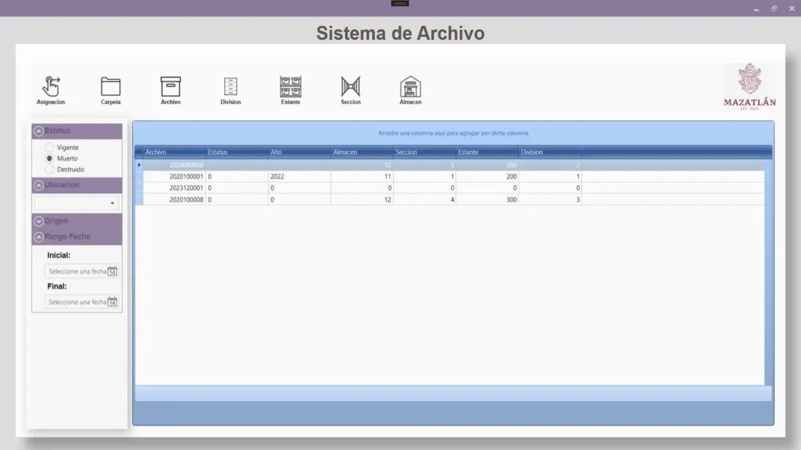
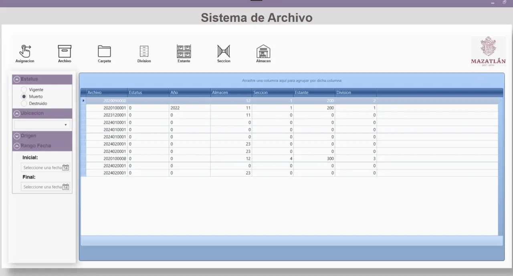
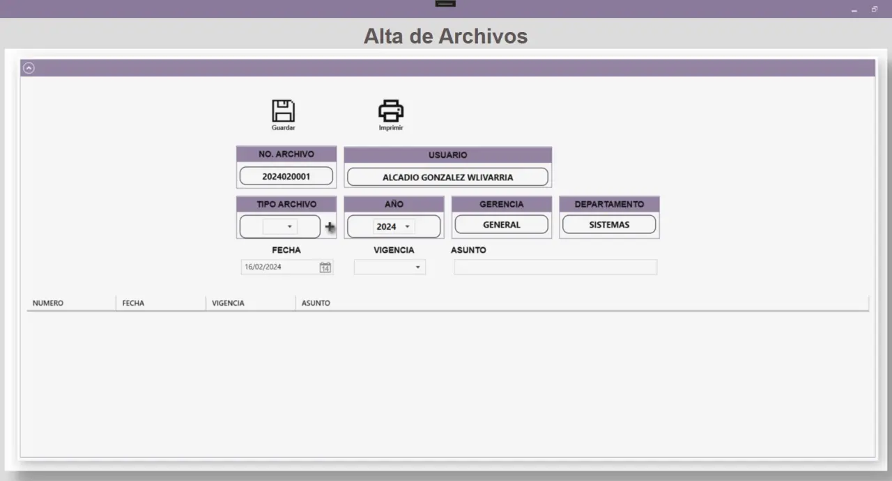
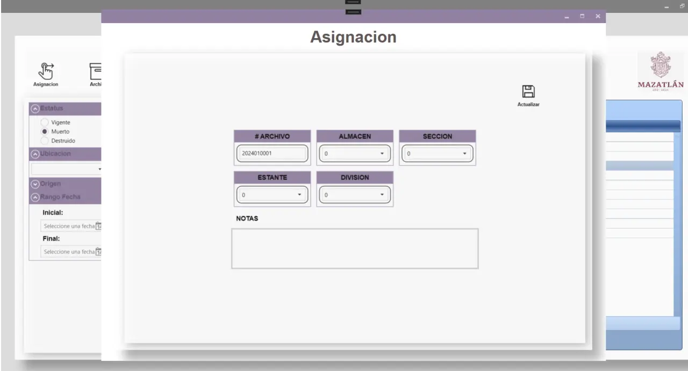
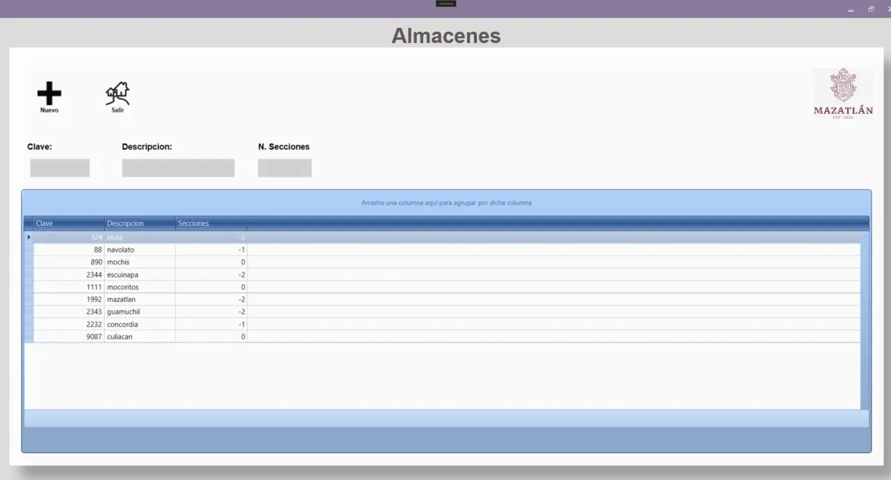

Caso de estudio
JUMAPAM
JUMAPAM es la institución pública responsable de los servicios de agua y saneamiento en Mazatlán, Sinaloa.
Vista rápida



Caso
Escenario
Desarrollar un sistema que permita migrar el archivo físico de la JUMAPAM a una plataforma digital, manteniendo su estructura organizacional, para su almacenamiento y gestión.
La aplicación debe contar con las siguientes capacidades:
- Gestionar usuarios y roles
- Cargar documentos digitalizados
- Buscar documentos mediante folio
- Filtrar documentos por criterios definidos
- Visualizar documentos almacenados
- Gestionar documentos dentro del sistema
- Gestionar contenedores del archivo (almacenes, estantes, etc.)
Solución
Aplicación de escritorio para Windows, compuesta de una arquitectura por capas basada en modelo, vista y controlador. Las vistas se desarrolladas con WPF (XAML), la lógica mediante C#, y la base de datos administrada en Microsoft SQL Server.
Aportes

Módulo e interfaz → Archivo/Home
- Características
- - Visualizar, eliminar y actualizar registros de documentos únicos.
- - Filtrar documentos por estatus, rango de fechas, origen y ubicación.

Módulo e interfaz → Alta
- Características
- - Cargar nuevos documentos en el sistema.

Módulo e interfaz → Asignación
- Características
- - Asignar documentos nuevos a un almacén especifico.
- - Reasignar documentos existentes a un almacén diferente.

Módulo e interfaz → Almacenes
- Características
- - Permite al administrador dar de alta nuevos almacenes dentro del archivo.